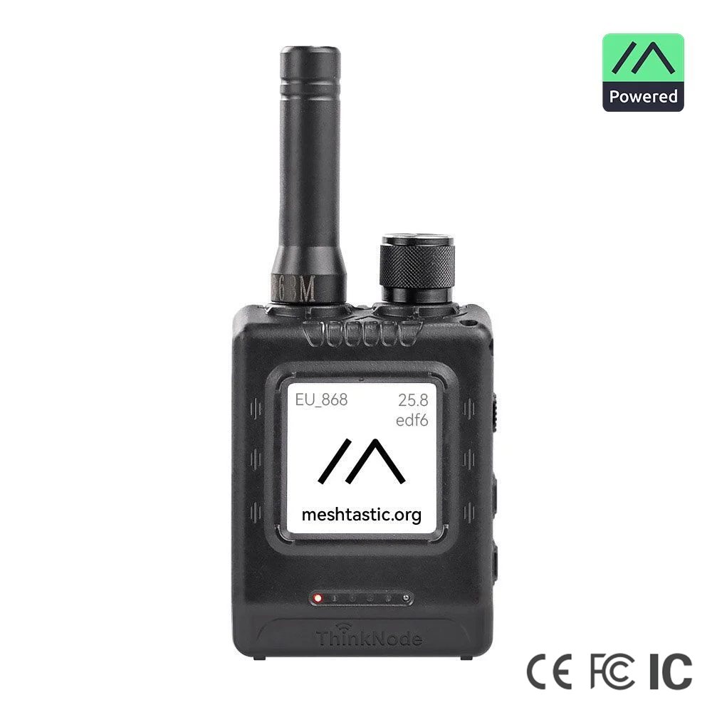
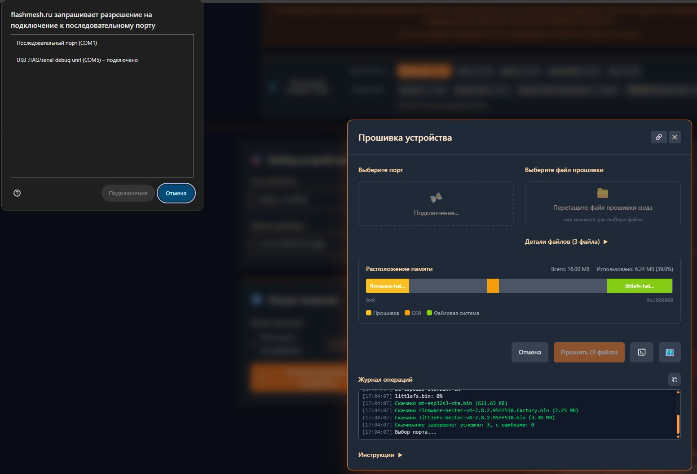
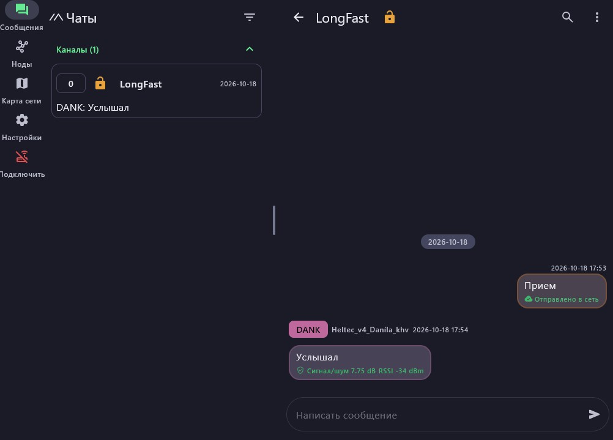

ЛоРа — быстрый старт
Как за один вечер собрать личную радиосеть для текстовых сообщений, которой не нужен ни интернет, ни сотовая связь.
Связь кажется чем-то само собой разумеющимся, пока не пропадает. Достаточно аварии на вышке или поездки за город, и мессенджер превращается в бесполезный значок. Для таких случаев существует технология LoRa и построенная на ней система Meshtastic.
Если совсем просто, это обычное радио, но общаетесь вы не голосом, а текстом, как в привычном чате. Каналы, группы и права доступа вы настраиваете сами. Сеть работает автономно и ничего не стоит.

Что это такое
Название LoRa происходит от английского «long range», то есть «большая дальность». Это способ передачи данных на радиочастотах с очень малым энергопотреблением. Сообщения получаются короткими, зато устройство годами живёт на небольшом аккумуляторе, а сигнал уверенно проходит там, где Wi‑Fi уже не справляется.
Meshtastic — открытый проект, который превращает платы с LoRa-модулем в узлы сети. Один такой узел называется нодой. Он состоит из платы, антенны и специальной прошивки.
Как сообщение находит адресата
Нода не обязана «видеть» собеседника напрямую. Пакет данных передаётся от одной ноды к другой, пока не дойдёт до цели. Каждая такая передача называется прыжком. Чем больше нод в округе, тем плотнее покрытие сети.
Как всё развивалось
- 2009Два француза начинают разработку технологии дальней маломощной радиосвязи.
- 2012Компания Semtech покупает стартап Cycleo, создавший LoRa.
- 2015Основан альянс LoRa Alliance для развития открытых стандартов.
- 2020Кевин Хестер запускает открытый проект Meshtastic.
- СегодняНода на Heltec V4 помещается в карман и собирается за вечер.
Быстрый старт за шесть шагов
Я собираю сеть на плате Heltec V4. Первое и главное правило: никогда не включайте плату без антенны, иначе радиочип может сгореть.
- Подключите антенну, затем плату к компьютеру кабелем USB Type‑C. Кабель должен передавать данные, а не только заряжать.
- Откройте онлайн-прошивальщик, выберите Heltec V4, последнюю версию и «Полную прошивку». Отметьте стирание устройства перед прошивкой.
- Запомните номер порта (у меня COM5) и дождитесь окончания записи.
- Скачайте клиент Meshtastic для ПК с GitHub и подключитесь по USB.
- Задайте имя ноды и параметры радиоканала (таблица ниже).
- Откройте общий чат LongFast на двух устройствах и отправьте первое сообщение.

| Режим работы | LONG_FAST |
| Частота в городе | 869,075 МГц |
| За городом (LPD) | ≈ 433 МГц |
| Лимит прыжков | 2 для теста, до 7 |
| Роль устройства | CLIENT |
После смены настроек плата может перезагрузиться, это нормально. Не забудьте сохранить ключи шифрования во вкладке «Безопасность».

Смотрим в действии
Полный процесс от прошивки до обмена сообщениями я показал в видео.